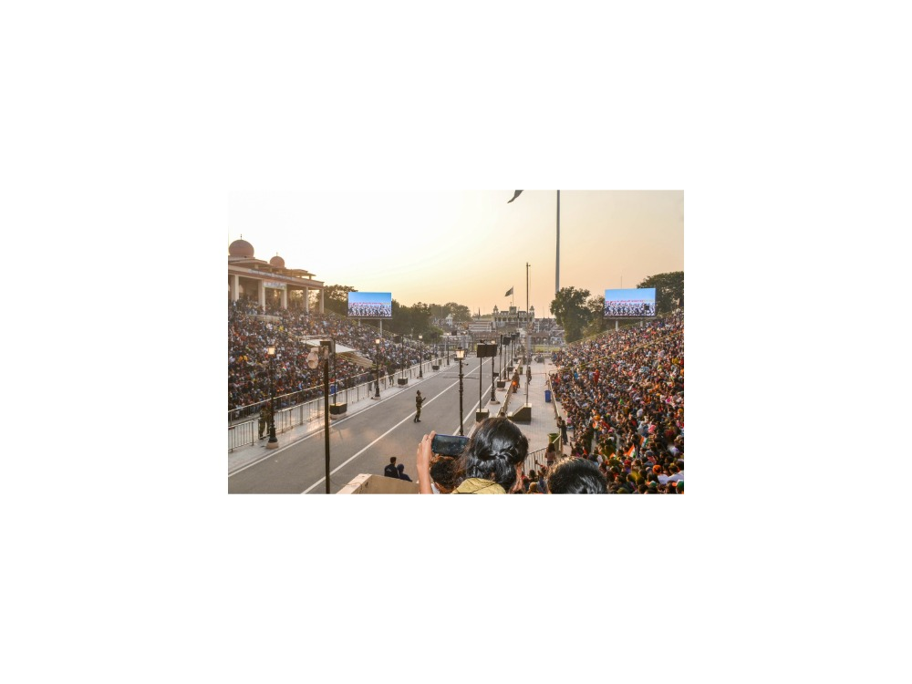

9-Day Himalayan Panorama & Golden Temple Traverse
Delhi · Shimla · Mandi · Naggar · Manali · Vashisht · Bir · Dharamshala/McLeod Ganj · Amritsar
The journey
Himalayan hill towns and monasteries, ending at the Golden Temple in Amritsar, over nine days.
Culminates at Sikhism's holiest shrine (Harmandir Sahib / Golden Temple) while incorporating Himalayan Buddhist monasteries and historic temples. Full days with several long drives. Best for energetic travellers.
Highlights
- Shimla Mall Road & Vice Regal Lodge.
- Naggar Castle & Roerich Estate.
- McLeod Ganj monasteries & Tibetan culture.
- Wagah Border ceremony & Golden Temple (Harmandir Sahib) in Amritsar.
Route and day by day
Schematic route, not to scale.
Day 1Delhi Drive to Shimla
Chauffeured drive from Delhi to Shimla (approx. 7–8 hours). Check in and stroll Mall Road. Overnight in Shimla.
Day 2Shimla Colonial Heritage
Tour Vice Regal Lodge, Jakhu Temple, Christ Church, and Gaiety Theatre. Overnight in Shimla.
Day 3Scenic Drive to Kullu Valley & Naggar
Drive to Naggar via Mandi (approx. 7–8 hours including stops: Pandoh Dam, Bhootnath Temple). Optional Beas River rafting. Overnight in Naggar.
Day 4Naggar Castle & Roerich Art Estate
Tour Naggar Castle, Tripura Sundari Temple, and Roerich Estate. Overnight in Naggar.
Day 5Manali Highlights & Paragliding Hub at Bir
Visit Hadimba Temple and Vashisht Hot Springs in Manali. Drive to Bir (approx. 6–7 hours); optional paragliding (seasonal, not included). Overnight in Bir.
Day 6Dharamshala & McLeod Ganj
Drive to McLeod Ganj. Visit Dalai Lama Temple complex, Tibetan Refugee Settlement, and St. John in the Wilderness church. Overnight in Dharamshala.
Day 7Norbulingka Institute & Tibet Museum
Tour Tibet Museum and Norbulingka Institute of Tibetan Arts. Overnight in Dharamshala.
Day 8Drive to Punjab & Wagah Border Ceremony
Drive from Dharamshala to Amritsar (approx. 5 hours). Visit the Attari–Wagah border for the Beating Retreat ceremony (held shortly before sunset; timings change by season and visitors are advised to arrive about two hours early). The ceremony has run in a scaled-down format since May 2025; confirm the current format before travel. Overnight in Amritsar.
Day 9Golden Temple, Jallianwala Bagh & Return to Delhi
Morning visit to Sri Harmandir Sahib (Golden Temple) and community langar kitchen. Visit Jallianwala Bagh memorial.
Return to Delhi via flight from Amritsar (ATQ), Shatabdi Express train, or private car (approx. 5.5–7 hours; not included).
Best time to visit
Best Fair Avoid
Best time: Apr–May, Sep–Oct. Also good: Mar, Jun, Nov.
April to June and September to November are the clearest months. Heavy monsoon rain (July and August) can cause landslides and delays on mountain roads, and snow can close high roads from December to February. The Toy Train usually runs all year but can be interrupted by monsoon landslides.
What is included
Included
- Private air-conditioned vehicle with driver
- Licensed guide (English or Russian)
- Monument entry fees
- Hotels (8 nights)
Not included
- Flights
- Meals unless stated
- Tips and personal expenses
- Travel insurance
Indicative; your personal quotation confirms exactly what is included.
Good to know
- Wagah (Attari) Beating Retreat: public viewing resumed in May 2025 in a scaled-down format (no handshake or gate opening); timings change seasonally. Confirm the current format before travel.
- Golden Temple requires a head covering; Jallianwala Bagh is a memorial site.
Places on this journey
Golden Temple Castle
Castle Roerich Estate
Roerich Estate McLeod Ganj Monasteries
McLeod Ganj Monasteries
Wagah Border Christ Church
Christ Church Bhootnath Temple
Bhootnath Temple Paragliding
Paragliding Hadimba Temple
Hadimba Temple Springs
Springs Jallianwala Bagh
Jallianwala BaghQuestions
Is this journey private?
Yes. Every journey is for you and your travelling companions only, with your own guide, car and driver. There are no groups or shared tours.
Can I change the itinerary?
Yes. This itinerary is a starting point. Tell me your interests, pace and dates and I will adjust it before I quote.
Which languages are available?
Vikramjeet guides in English and Russian.
How demanding is this journey?
Full days with several long drives. Best for energetic travellers. The pace rating is fast pace.
How do I book, and when will I know the price?
Send a request with your dates. You receive a personal itinerary and quotation within 24 hours.
Themes
Himalayan Escapes Spiritual & Multi-Faith
Destinations
Similar journeys
 1 Day
1 Day1-Day Imperial Delhi & Spiritual Heritage: Private Full-Day Tour
Old Delhi's lanes, Mughal tombs and sacred sites of three faiths, paced around you in one private day.
View journey → 5 Days
5 Days5-Day Eastern Himalaya: Darjeeling, Kalimpong & Gangtok
Tea estates, monasteries and Kanchenjunga at sunrise across Darjeeling, Kalimpong and Gangtok.
View journey → 8 Days
8 Days8-Day Himalayan Heritage Rail: Toy Train, Kullu Valley & McLeod Ganj
The UNESCO Toy Train, colonial Shimla, the Kullu Valley and the Tibetan hills of McLeod Ganj in eight days.
View journey →